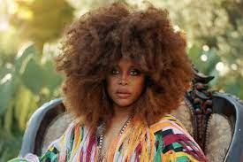
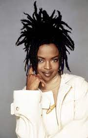
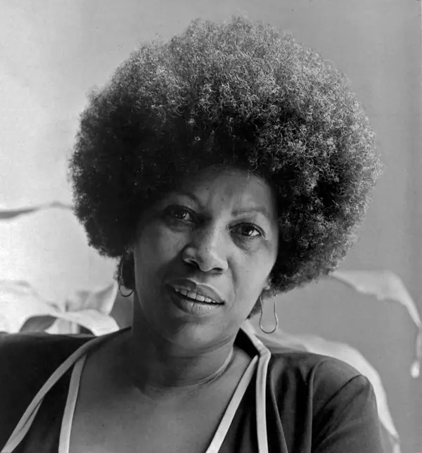

Heres my fun page! Ill tell you some more about me! I love reading and writing and my favorite author at the moment is Toni Morrison. Im also super passionate about fashion and design, its something I would definitely consider minoring in it in college. My goal is to major education and/or english to become a teacher internationally. I also loveeeee music a lot. some of my favorite artists are Erykah Badu and Lauryn Hill who are pictured above.